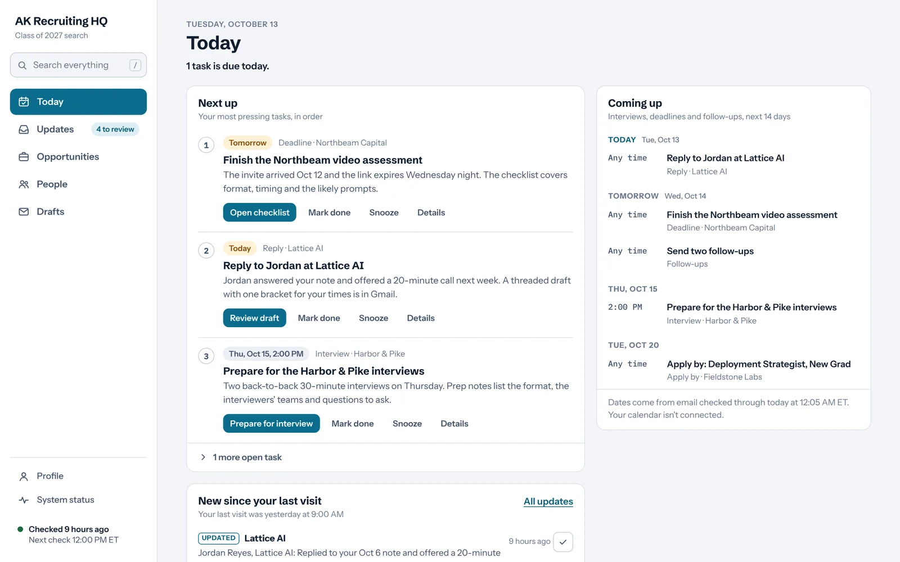
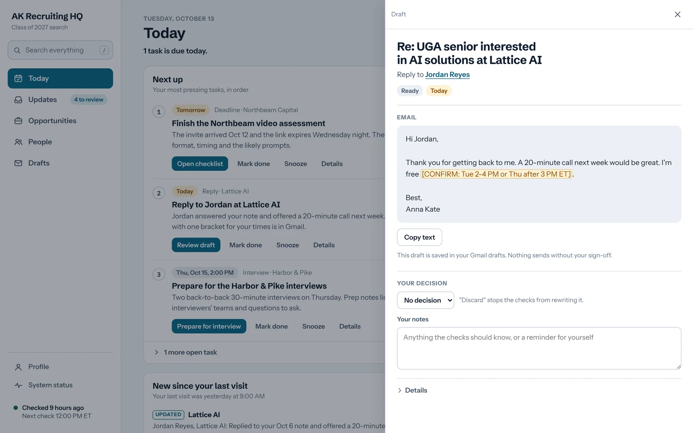
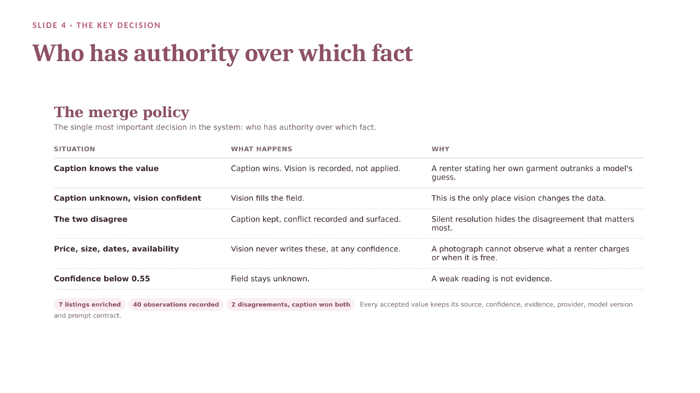
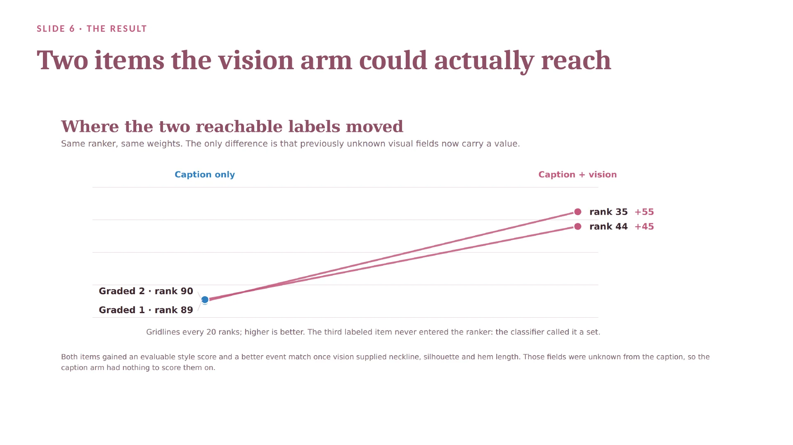

Finance, University of Georgia · Certificate in Artificial Intelligence for Business · May 2027
Anna Kate Black
I build AI workflows around problems I can see up close, then check whether they actually work. Claude writes most of my code. My part is choosing the problem, setting the rules the system has to follow, testing it in real use, and being clear about what the results do and don't show.
If a simple, tested rule can get a fact right, I use the rule. A model handles what rules can't, like reading a photo.
A person approves anything that leaves the system.
Recruiting HQ writes drafts in my Gmail. It cannot send, accept a meeting or submit an application.
Say what the result doesn't show.
Every project below ends with its limits. In Occasion Retrieval, the headline score was zero, and I reported it.
PrototypeBuilt April 2026 · Locker launched its own version in July 2026
Locker Lens
As a Locker user, I built a working prototype of photo-to-product search on Locker's live site and demoed it to their CEO and Head of Product. It informed Locker Lens, the feature Locker's own team later built and launched.
The prototype I built
April 2026. Described from my extension code, my demo recording and my emails with Locker. The code and recording are not published here.
Why
After a call with Locker's Head of Product, I asked friends who use Locker every day what was missing. The same answer kept coming back: there was no quick way to save something you found in a store. Getting it into Locker meant opening Google Lens, taking a photo, finding the listing, copying the link and pasting it into the app. Half the time, my friends just gave up.
What it did
A Lens button appeared on the Locker profile page, next to Edit and Share.
Clicking it opened a window to drag in or browse for a photo.
The photo went to a temporary image host (imgBB) to get a link, and that link went to Google Lens through the Serper API.
Product matches from real retailers came back in a gallery, and the user picked the ones they wanted.
The picks appeared in the Wants grid as product cards matching Locker's layout, marked with a small Locker Lens badge and linking to the retailer's page. A search took about three seconds.
Decisions I made
A Chrome extension on the live site. I had no access to Locker's code or database, so injecting into the real page was the only way to show the idea inside Locker's actual interface. I was clear that a real version would be built into the app.
Make it look native. I inspected Locker's buttons in the browser's developer tools and matched their shape, size, type and colors, so the Lens button sat beside Edit and Share as if Locker had made it. The script found the Share button by the stable part of its name, because the rest changes every time the site updates.
Use an existing visual search service. In a proposal I wrote on April 5, I recommended buying visual search through an API first and building a custom model only once usage justified the cost. The prototype followed that approach.
Read-only. Nothing was written to Locker's systems. It ran in my browser on my own account, but the whole flow worked end to end: capture, search, choose, save.
Test past the first use case. After the demo call, I tried social media screenshots and photos of people without changing any code, and it found matches for both.
My role and how I used AI
I built it with Claude, which wrote the extension code. I did the user research, chose the approach, gathered Locker's styles from the live site, tested it on my own photos and pitched it. I sent the demo recording on April 14 and walked their CEO and Head of Product through it on April 15. On that call the Head of Product pressed me on the image pipeline, my design choices and the limits, and that afternoon the CEO asked whether I would join as a Product AI intern.
What I learned
A working prototype got more attention than a list of ideas would have, and I could design around having no backend access.
July 2026. From Locker's public App Store release notes and launch posts.
Locker's team built Locker Lens into the app and announced it in the App Store release notes for version 2.2.38. Shoppers upload an in-store photo, a screenshot from social media or an inspiration picture, and Locker finds the exact item or similar products to save.
"1,500+ uses since the first wave went live in the App Store"
Mackenzie Tjogas, Head of Product at Locker, in her launch post on July 22, 2026
None of my code is in the product. Locker's team wrote the production version; my prototype showed the idea and a working flow that informed it.
The prototype only ran in my own browser, as a demo. It was never released to users.
The usage figure is Locker's, from launch week, and reflects their product, not my prototype.
Runs dailyPersonal · Since October 6, 2026
Recruiting HQ
An AI agent that runs the back office of my job search twice a day. It reads my recruiting email, rechecks which roles are still open, finds people worth contacting and writes reply drafts for me to review. It cannot send anything.
The problem
By early October I had applied to about 30 roles and had 17 networking conversations going. Deadlines, replies and follow-ups were spread across Gmail threads, applicant portals and my own notes, and nothing tied them together.

The hub page, shown here with made-up companies and people. The real one holds my actual pipeline, so it stays private.
What each run does, at noon and midnight
Email audit. Reads new recruiting mail and my sent mail, then updates where each application and conversation stands. A scheduling request is not logged as an interview until a confirmation arrives.
Role check. Rechecks each posting on the company's own careers site. A role is marked closed only after it is missing on two checks in a row.
People. Finds a few relevant contacts from public sources, and searches my Gmail first so it never suggests someone I already emailed.
Drafts. Writes replies and follow-ups inside the right Gmail thread, with a bracket wherever it needs a fact only I have.
Prep. Writes interview and call prep notes from the actual invite emails.
Report. Updates the hub page and emails me only when something new needs me.
Rules I set
Drafts only. It cannot send, reply, accept a meeting or submit an application. The one email it sends is a short summary, to me.
Every fact links to its source, an email or the company's careers page. Missing information shows as unknown, never as "nothing due."
My decisions win. If I mark a role Pass or a person Do not contact, it stops. It never overwrites a field I edited. When new evidence conflicts with my call, it flags it for me instead.
Email is data, not instructions. Text inside a message can't tell it to do anything.
No paid lookups. It uses free search only on the contact database.

A reply draft waiting for review, with demo data. The highlighted bracket is the one fact it needs from me.
How it got here
Started with a weekday 7 AM inbox triage that drafts replies and emails me a one-minute summary. It still runs.
Added three separate scheduled tasks for open roles, networking targets and my Gmail pipeline, all writing to one shared hub. Two of the three failed on their first run when they hit usage limits.
Rebuilt them as one cycle. A run lock stops two runs from overlapping, and every write checks the record's version so it never overwrites a change I made on the page.
It has run at noon and midnight every day.
52
companies tracked
37
roles checked against official postings
49
applications and conversations followed
18
drafts written for my review
As of October 10, 2026. In its first week it caught a reply from a contact offering to refer me and had a draft response in my Gmail by the next update.
My role and how I used AI
I built it in conversation with Claude. I described the workflow and the rules; Claude wrote the run instructions and built the hub page, which runs as Claude scheduled tasks with my Gmail and a contact database connected. When a run failed or did something I didn't want, I changed the rules. I use it every day.
What this doesn't show
It finds and tracks faster than I decide. In week one, its follow-up drafts sat unsent for days, so the bottleneck moved from finding information to my own review.
When I rewrite a draft, the next run records that as a pattern instead of assuming its drafts were good. In week one I replaced its reply with my own wording and wrote my own thank-you notes.
It can't read LinkedIn, so the contacts it finds are verified from public pages only.
Next, I want it to find more relevant people and get better at ranking who is actually worth contacting.
ExperimentPersonal · September 2026 · Code on GitHub
Occasion Retrieval
Can a dress's photo and its caption, combined, rank rental listings better than either one alone?
The problem
Students at UGA rent formal dresses from student-run Instagram accounts, and I had 221 rental posts saved. Picking one means checking size, price, availability on the date, whether it fits the occasion and season, and whether I like it. None of that is structured. It is free text, written by a different person every time, in a caption that was never meant to be searched.
It grew out of research I wrote up in May on why fashion search fails: shoppers search by occasion and feeling, like "something for graduation week," while listings read like spec sheets. In a nine-product test, GPT-4o inferred occasion and style from product details, while GPT-4o-mini and Gemini Flash returned flat descriptions. After Locker Lens, I also wanted a project that went deeper than calling one API, and that I understood well enough to explain every design decision.
What I built
A pipeline that reads my own Instagram data export, with no login and no scraping. It pulls facts out of captions with tested rules, removes dresses that fail hard limits like size, price and date, and ranks the rest on six scores you can trace. Of 221 saved posts, 157 were dresses and 149 made it into the final ranking.
Then the experiment: Claude's vision model reads the photos to fill in details captions leave out, like neckline, silhouette and color, and the exact same ranker runs again.
Decisions that shaped it
Rules for simple facts. My parser read "$50" but missed "50$", so a listing that clearly stated its price looked like it had none. The fix was a rule and a test, which is cheaper and more predictable than asking a model every time.
The caption wins on what the renter stated: size, price and dates. Vision can only fill a blank, and only above 0.55 confidence. When the two disagree, the conflict is recorded instead of silently resolved.
Unknown stays unknown. Scoring a missing neckline as zero would rank how chatty a caption is, not how well the dress fits the occasion.
One difference between the two versions. Both use the same ranker, weights and filters, so any change comes from the photos.
No Instagram credentials, ever. Real photos, captions, usernames and my labels stay on my computer and never go into the repository.
Status
It works today, on my laptop. It reads my Instagram export, pulls facts out of captions, filters and ranks dresses for an event, explains every score, and runs as a small local app where I type a request like "a Christmas cocktail dress, festive and sparkly" and get ranked cards back. The vision experiment ran live on the labeled dresses. Not built yet: the database, image embeddings, taste learned from my saved items, and any hosted version anyone else can use.

From my slides: who has authority over which fact.
Result
The first live run sent the photos of my labeled dresses to Claude's vision model. All 7 reachable photos came back, with 91% of the requested visual fields filled. The top-10 score (nDCG@10) was 0 in both versions, because none of the dresses graded as good matches made the top 10 either way. The two good matches the system could reach moved from rank 90 to 35 and from rank 89 to 44, and 5 of the 6 labeled dresses I could compare moved up. Only 7 of 157 dresses were enriched, so this shows the photos moved the right items. It does not show the system got better overall.

The two reachable good matches, before and after vision filled in their missing details. Same ranker, same weights.
My role and how I used AI
Claude wrote the code, and the commit history shows every step. I chose the problem and the question, set the privacy rules, ran it on my own data, caught the price bug in my own listings, and decided what the result can and can't claim. I picked the 8 real dresses used as the test set; Claude assigned each one's grade for each event. I built the slides for my AI research group at UGA.
What this doesn't show
The test set is small and its grades are not mine: 8 dresses I picked, graded by Claude. For the event in this experiment, 3 were graded as good matches.
The score weights are hand-set, not learned from data.
Only the labeled dresses were enriched, 4.5% of the catalog. Image links from Instagram posts are also unreliable.
Next, I would enrich the whole catalog and label more dresses near the top of the ranking before adding anything more complex.
A script that emailed me a restructuring lesson every morning before my summer at BRG, built from that day's news and designed to get harder as I learned.
The problem
I had 100 days before starting on BRG's turnaround and restructuring team. A UGA student who had done the same internship told me the hard part wasn't the news. It was the legal vocabulary, the jargon, and doing restructuring work in Excel and PowerPoint without hesitating. A news digest wouldn't teach that, so I wanted a tutor that used each day's news to teach the job.
What it did each morning
At 6:00 AM, Windows Task Scheduler woke my laptop and ran the Python script.
Serper's search API pulled the top three results for Chapter 11 and distressed-debt news.
Claude, prompted as a senior restructuring mentor, wrote a six-part lesson: a summary, why the news matters, an interview question with a worked answer, one vocabulary term, an Excel exercise and a PowerPoint exercise.
Resend emailed the lesson to me.
The script saved the new term to a flashcard file and logged what I had covered for the next day.
Decisions I made
A search API instead of a scraper. News sites block scrapers; Serper returns results as structured data.
Memory so it didn't repeat itself. Before each call, the script read a learning log and told Claude what I already knew and to make the lesson slightly harder.
Flashcards without copying. The prompt asked Claude to end with a hidden "term | definition" line, which the script split off before sending and added to a spreadsheet file.
Reliability over length. My first version asked for 25,000 tokens per email, and requests that long ran past the API's time limit and crashed. I cut it to 8,000 so it would finish every morning.
Keys out of the code and no server bill. API keys lived in a local file, and the laptop's scheduler replaced a paid cloud server.
My role and how I used AI
I built it in Python with Claude's help, and Claude wrote each day's lesson. I spent about 30 minutes each morning on the lesson and its exercises, including building a debt waterfall from mock numbers.
What this doesn't show
It took the top three search results for the same query every day. By April, several lessons opened with 2025 figures, so the top result was not always current news.
My inbox has 20 of its emails, sent between February 23 and April 21. The code isn't published here; my blog post walks through it.
Friends kept asking me to fix their resumes, and each one took me about two hours. I built a two-step tool: a chat that asks questions and rewrites bullets to fixed content rules, then a script that formats the result into a Word document with set fonts, margins and one-line bullets. It brought a resume down to about 20 minutes. A classmate asked whether it invents numbers when a bullet has none. Its rules ask for a number in every bullet, so every figure needs a person to check it.